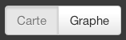
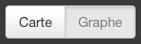

La Carte permet d'afficher, par sexe, le nombre d'annonces pour chaque station de métro. Les mots les plus fréquents (quelque soit le sexe) sont affichés sur la partie gauche

Le Graphe permet de visualiser les différences de vocabulaire selon les sexes.
La distance d'un mot aux 4 types (bulles grises Homme>Femme, Homme>Homme, etc...) reflète sa présence relative dans l'ensemble des annonces correspondantes. Sélectionner un mot permet de n'afficher que sa catégorie (vêtement, partie du corps, couleurs, etc...)